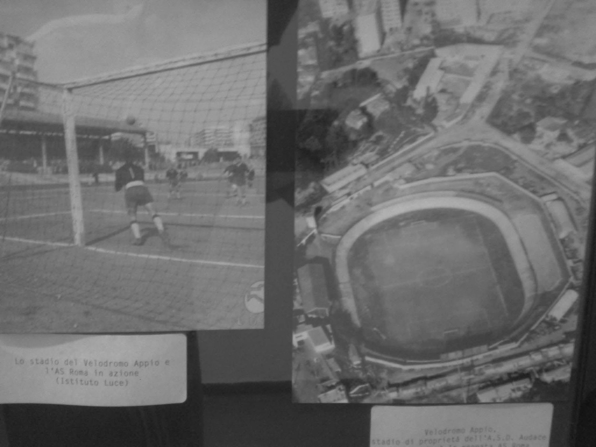
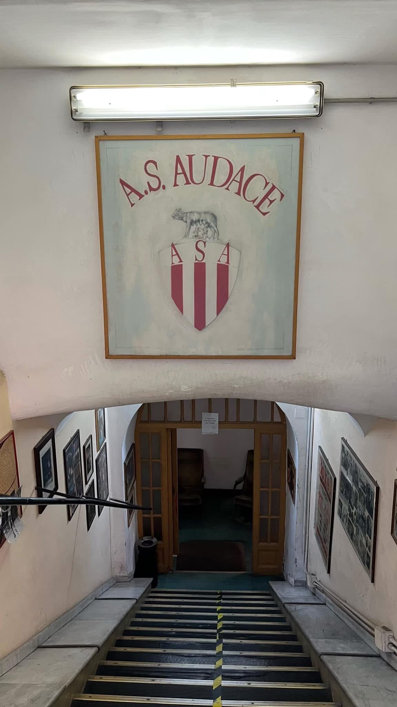
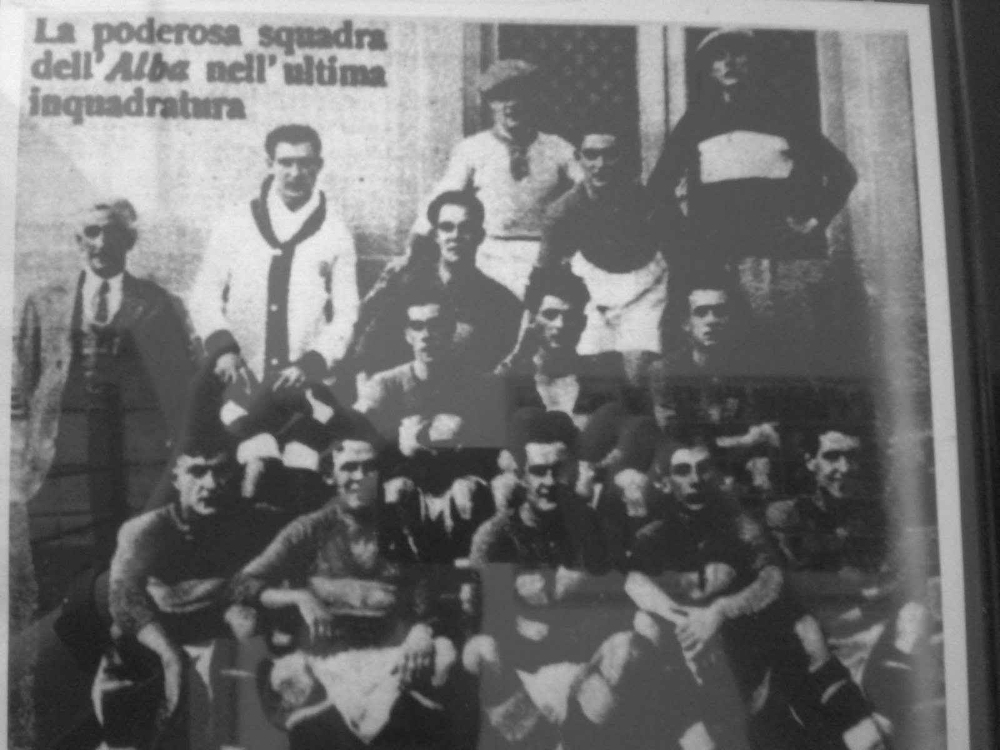
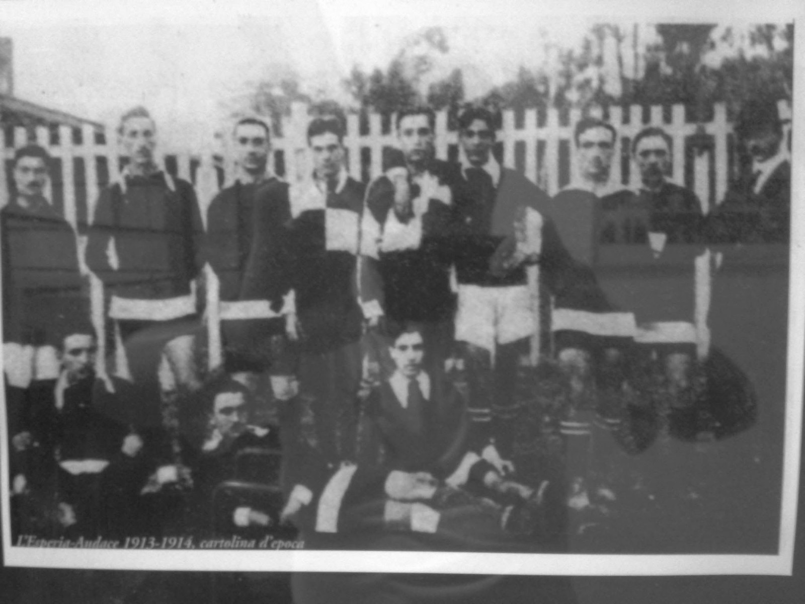
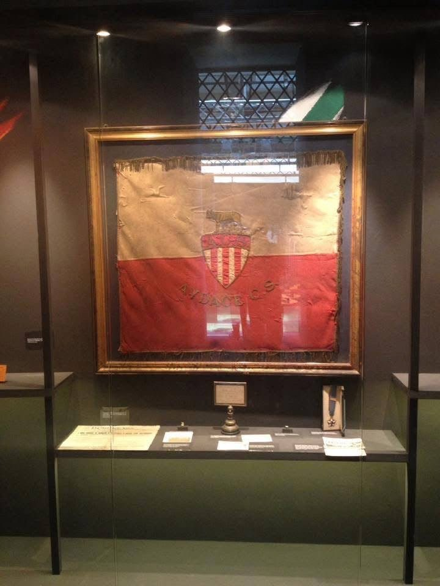

La fondazione.
L’Audace entra nel panorama sportivo romano come realtà polisportiva.


Progetto 1901
Il progetto raccoglie fotografie, documenti, persone e luoghi che raccontano l’Audace come parte della storia sportiva di Roma.
Cronologia essenziale
L’Audace entra nel panorama sportivo romano come realtà polisportiva.
Una fase centrale nello sviluppo del calcio romano dei primi anni.
Una tappa decisiva nella storia che conduce alla nascita dell’AS Roma.
La memoria della Sala Gigli e del ring si lega alla stagione dei Giochi di Roma.
Calcio a 8, pugilato e archivio mantengono viva l’identità dell’Audace.

Le origini sportive
Podismo, atletica, ginnastica, ciclismo, nuoto, lotta, scherma e pugilato compongono la memoria polisportiva dell’Audace.
Roma e l’Audace

La sede storica custodisce cimeli, fotografie, trofei e spazi che hanno attraversato generazioni di atleti.
Archivio fotografico



Progetto 1901
Documenti, fotografie e testimonianze potranno ampliare l’archivio nel tempo.
Contatta il Club